Foundations
Learning outcomes
- Explain what a time series is and how it differs from cross-sectional data, and say why temporal dependence calls for its own methods.
A time series is an ordered sequence of observations on one process. The same observation is recorded at successive time points. Cross-sectional data record many units at a single time point. Thus, their order does not carry information. In a time series, observations are sequentially correlated, so their order carries information. Standard methods assume independent errors whereas a time series needs this dependence to be modelled explicitly.
- Treat an observed series as one realisation of a stochastic process.
An observed series is treated as one realisation of a stochastic process. Each \(y_t\) is a random variable (before being observed), after being observed it becomes a realised value. A stochastic process defines a series of these random variables. Thus, the observed data is one sample path out of all the possible paths the same mechanism could have produced. Although different realisations differ visually, they have the same statistical character. How far different realisations appear from each other is dependent on the underlying statistical process. In a white noise process, different realisations will lie around a fixed level. In a random walk, the different realisations will drift apart, since shocks accumulate.
- Explain what forecasting is, judge when a process is predictable, and keep forecasts, goals and plans separate.
Forecasting is when we use available information to estimate an unobserved quantity. A forecast consists of both a point estimate and a prediction interval since the future value is a random variable (and has some uncertainty associated with it). The predictability of a series is dependent on how well its driver are understood, if sufficient relevant data exists, if the series is stable and if publishing the forecasts will change the outcome. A series can only be predictable if the horizon and sampling interval is stated. Forecasting describes what is likely to happen in the future based on past observations, goal setting describes what we want to happen in the future and planning describes the actions implemented to achieve our goal based on our forecasts.
- Match a forecast horizon to the decision it supports, and read a forecast as a random variable rather than a single number.
The decision determines the forecast horizon (short-term, medium-term, long-term). The horizon then narrows down the choice of model. Uncertainty increases as the forecast horizon increases.
- Identify trend, seasonality, cycle and irregular variation in a plot, and describe the shapes each of them takes in practice.
Trend describes the long-run direction of movement of a series. Seasonality is the repeated pattern, that has a fixed length whereas the cycle refers to longer oscillations in the data often driver by the underlying process. Irregular variation is what remains after removing the trend, seasonality and cycle. Ideally this would just be the innovations but in practice this often still contains short-term dependence. Trend can be linear, exponential, polynomial. Seasonality can be additive, multiplicative or have a single spike.
- Produce the four benchmark forecasts, and evaluate any competing model against them on data it has not seen.
The Mean forecasts averages all past observations and carries that value into the future. The Naive carries the last observational value into the future. The Seasonal naive model is where every future cycle repeats the last observed cycle. The Drift model carries the slope of the line between the first and last observation into the future.
- Use the lag and lead operators, and the algebra built on them, to write models compactly.
The lag operator \(L\) shifts a series back by a period, \(L^k y_t = t_{t-k}\) and the lead operator \(F = L^{-1}\) shifts the series forward, \(F y_t = y_{t+1}\). Both of the operators are linear and we can use this to write models compactly. AR(2) \(y_t = \phi_1 y_{t-1} + \phi_2 y_{t-2} + \varepsilon_t\) can be written as \((1 - \phi_1 L - \phi_2 L^2)y_t = \varepsilon_t\).
- Define weak stationarity, say which of its conditions a given series violates, and choose a transformation that restores it.
A process is weakly stationary if its mean is constant, its variance is constant and finite and the autocorrelation depends only on \(h\) on on \(t\). The Airpassengers dataset is an example of a non-stationary process. To restore stationarity you can transform the data (log/Box-Cox transformation) and difference the series.
- Define white noise, MA, AR, ARMA, ARIMA and SARIMA processes, derive their basic properties, and identify them from an ACF and a PACF.
White noise \(\varepsilon_t \sim WN(0,\sigma^2)\) has \(E(\varepsilon_t)=0\), \(\text{Var}(\varepsilon_t)=\sigma^2\) and \(\gamma(h)=0\) for \(h\neq0\), so its ACF and PACF show no significant spikes.
MA(\(q\)), \(y_t=\mu+\sum_{j=0}^{q}\theta_j\varepsilon_{t-j}\) with \(\theta_0=1\) is always stationary and \(E(y_t)=\mu\). The \(\varepsilon\) terms are uncorrelated, so \(\gamma(0)=\sigma^2\sum_{j=0}^{q}\theta_j^2\). When the lag is \(h \le q\), \(y_t\) and \(y_{t-h}\) have some common shocks (\(\varepsilon_{t-h},\dots,\varepsilon_{t-q}\)). Only the shared shocks contribute to the covariance, so \(\gamma(h)=\sigma^2\sum_{j=0}^{q-h}\theta_j\theta_{j+h}\) and \(\rho(h)=\gamma(h)/\gamma(0)\). When the lag is \(h>q\), there are no shocks in common, so \(\gamma(h)=0\). Thus, the ACF of an MA(\(q\)) cuts off after lag \(q\).
AR(1), \(y_t=c+\phi y_{t-1}+\varepsilon_t\) is stationary when \(|\phi|<1\). Since the mean is constant, \(\mu=c+\phi\mu\), so \(E(y_t)=c/(1-\phi)\). \(\varepsilon_t\) is uncorrelated with \(y_{t-1}\), so \(\gamma(0)=\phi^2\gamma(0)+\sigma^2=\sigma^2(1-\phi^2)\), which is only finite when \(|\phi|<1\). Multiplying the mean-adjusted equation by \(y_{t-h}-\mu\) and taking expectations gives \(\gamma(h)=\phi\gamma(h-1)\), so \(\rho(h)=\phi^h\). Thus, the ACF of an AR(\(p\)) tails off. Once \(y_{t-1},\dots,y_{t-p}\) are included, further lags add no new information, so the PACF cuts off after lag \(p\).
ARMA(1,1), \(y_t=c+\phi y_{t-1}+\varepsilon_t+\theta\varepsilon_{t-1}\) is stationary when \(|\phi|<1\) and \(E(y_t)=c/(1-\phi)\). The MA term only affects the covariance at lag 1. When the lag is \(h\ge2\), \(\gamma(h)=\phi\gamma(h-1)\), thus the ACF decays like an AR(1) after lag 1. The process can be written as both an MA(\(\infty\)) and an AR(\(\infty\)) (when \(|\theta|<1\)), so neither the ACF nor the PACF cuts off. Thus, both the ACF and PACF of an ARMA(\(p,q\)) tail off.
ARIMA(0,1,0), \(y_t=y_{t-1}+\varepsilon_t\) is the simplest ARIMA (a random walk). Substituting back gives \(y_t=y_0+\sum_{i=1}^t\varepsilon_i\). The \(\varepsilon\) terms are uncorrelated, thus \(\text{Var}(y_t)=t\sigma^2\), which grows with \(t\), so the process is non-stationary. \(\text{Cor}(y_t,y_{t-h})=\sqrt{(t-h)/t}\approx1\), thus the ACF decays very slowly. Differencing gives \((1-L)y_t=\varepsilon_t\), which is white noise. Thus, an ARIMA(\(p,d,q\)) is differenced \(d\) times and the ARMA(\(p,q\)) is then identified from the differenced series.
SARIMA\((p,d,q)(P,D,Q)_s\) applies the same results at the seasonal lags \(s, 2s, \dots\). For example, the seasonal MA(1), \(y_t=\varepsilon_t+\Theta\varepsilon_{t-12}\), only shares a shock with \(y_{t-12}\), thus \(\gamma(12)=\Theta\sigma^2\) and \(\gamma(h)=0\) at every other lag \(h\neq0\). Thus, the ACF of a seasonal MA has spikes at multiples of \(s\) that cut off after lag \(Qs\), and the PACF of a seasonal AR has spikes at multiples of \(s\) that cut off after lag \(Ps\). A slow decay at lags \(s, 2s, \dots\) means a seasonal difference is needed.
- Fit, diagnose and forecast these models in R, following the workflow of Box and Jenkins, and test residuals against the white noise standard.
The Box–Jenkins workflow has four steps: identification, estimation, diagnostic checking and forecasting. I applied this to the AirPassengers series in Section 1. I also followed the full workflow on real data in Project 2, where I fitted and compared AR, MA, ARMA and SARIMA models for Theewaterskloof Dam capacity and sea surface temperature.
- Explain volatility clustering and fit ARCH and GARCH models to it.
Volatility clustering describes how large movements tend to follow large movements and small movements tend to follow small movements. I tested for ARCH effects and fitted ARCH, GARCH and GJR-GARCH models to daily JSE All Share Index returns in Project 3.
What is a time series?
Time series is a single measurement taken at multiple points across time. Technically we are modelling the same thing over and over again (this makes sense as to why there is sequential correlation).
Note
Time series model dependence through sequential observations.
Assumption
Equally spaced measurements.
Assumption
Autocorrelation across time.
Qualitative, Continuous and Discrete Series
Example: Continuous series
Figure 1 plots the number of monthly airline passengers over a 12 year period. This figure clearly illustrates the concepts of seasonality and trend.
Example: Discrete series

Figure 2 plots the changing number of observed seals over a period of 43 years.
What to do when you have missing observations in a time series?
In discrete time series to deal with missing observations you can express the model in state-space form (ARIMA or Structural Time Series). For a missing observation \(y_t\), skip the update step in the Kalman filter and only run the prediction step. The likelihood is evaluated only over the observed time points.
Kalman filtering
Kalman filtering (linear quadratic estimation) is an algorithm that uses a series of measurements over time to estimate unknown variables, by estimating a joint probability distribution over the variables for each time-step.
In continuous time series, missing observations look like irregularly spaced sampling intervals. You can model the underlying system using Stochastic Differential Equations (CARMA) or you can aggregate the irregular time steps into regular, discrete intervals.
Temporal granularity and the aggregation effect
Aggregating up can either smooth out high-frequency structure (stock returns, etc) or can reveal low-frequency structure (Sales, etc).
One realisation of a stochastic process
Noise in the data introduces different realisations. If your model fits one dataset perfectly then it is overfitting.
The Forecasting Problem
What is forecasting?
Forecasting is a prediction about what will happen in the future based on evidence that we have (with some level of uncertainty). This uncertainty gives rise to forecast intervals (not just point estimates). Goal setting is what we want to happen in the future. Planning helps us reach our goal.
Note
A series can only be called predictable if the interval and horizon are stated as this helps determine the model.
Forecast \(\rightarrow\) Goal \(\rightarrow\) Plan \(\rightarrow\) Implementation \(\rightarrow\) Outcome \(\rightarrow\) Forecast …
A forecast horizon is how far into the future you try and predict values. When looking at time series data we are looking for stable, informative patterns (not just a lot of data).
A random walk is a process where memory is permanent. Every future shock accumulates endlessly resulting in forecast variance growing linearly. A stationary AR is a process where memory decays geometrically. Shocks die out, forcing the forecast back to the process mean.
Stationary AR(1) process, \(h\) step forecast error variance:
\[ \text{Var}(e_{T+h}) = \sigma^2 \frac{1-\phi^{2h}}{1-\phi^2} \rightarrow \frac{\sigma^2}{1-\phi^2} \quad \text{as } h \rightarrow \infty \]
Note
Forecasts are random variables.
Exploring a Series
The classical decomposition
\[ \begin{aligned} \text{Additive:} \quad y_t &= T_t + S_t + C_t + I_t \\ \text{Multiplicative:} \quad y_t &= T_t \cdot S_t \cdot C_t \cdot I_t \end{aligned} \] The nature of the seasonality in a series (additive, multiplicative or drifting) determines whether log transformation or differencing are required.
Two ways of looking at a series
- Time domain - this looks at previous observations
You would use time domain when estimating predictive conditional expectations (forecasting at time \(t+1\) given \(t, t-1\)), when dealing with short sample sizes.
A lag is the separation between two observations measured in time units.
Note
Plotting a series against its own first lag is the simplest possible diagnostic for dependence.

- Frequency domain - this looks at cycles in the series
You would use frequency domain when identifying hidden cycles/patterns or when analysing long-memory dynamics. This is covered in Spectral Analysis.
The components of a series
Trend is the long run direction of movement. Seasonality is the pattern that repeats at a fixed and known interval. Cycles are long oscillations with no fixed length. Irregular variation (noise) is random variation unexplained by the trend, seasonality and cycles.
Time Series Analysis in R
AirPassengers dataset
Code
# Run once — install anything missing
pkgs = c("tidyverse", "tsibble", "feasts", "fable", "timetk",
"modeltime", "kableExtra", "here")
install.packages(pkgs[!pkgs %in% installed.packages()[, "Package"]])Handling dates and aggregation
AirPassengers is already a time series object but to convert a dataset to a time series object you use: ts(c(), start = c(year, month), frequency = #obs/unit time)
Code
# Read in data:
data(AirPassengers)
# View(AirPassengers)
print(AirPassengers) Jan Feb Mar Apr May Jun Jul Aug Sep Oct Nov Dec
1949 112 118 132 129 121 135 148 148 136 119 104 118
1950 115 126 141 135 125 149 170 170 158 133 114 140
1951 145 150 178 163 172 178 199 199 184 162 146 166
1952 171 180 193 181 183 218 230 242 209 191 172 194
1953 196 196 236 235 229 243 264 272 237 211 180 201
1954 204 188 235 227 234 264 302 293 259 229 203 229
1955 242 233 267 269 270 315 364 347 312 274 237 278
1956 284 277 317 313 318 374 413 405 355 306 271 306
1957 315 301 356 348 355 422 465 467 404 347 305 336
1958 340 318 362 348 363 435 491 505 404 359 310 337
1959 360 342 406 396 420 472 548 559 463 407 362 405
1960 417 391 419 461 472 535 622 606 508 461 390 432Code
# Sum by year:
annual_sum = aggregate(AirPassengers, FUN = sum)
# Mean by year:
annual_mean = aggregate(AirPassengers, FUN = mean)
print(annual_sum)Time Series:
Start = 1949
End = 1960
Frequency = 1
[1] 1520 1676 2042 2364 2700 2867 3408 3939 4421 4572 5140 5714Code
print(annual_mean)Time Series:
Start = 1949
End = 1960
Frequency = 1
[1] 126.6667 139.6667 170.1667 197.0000 225.0000 238.9167 284.0000 328.2500
[9] 368.4167 381.0000 428.3333 476.1667Helper conversions
Code
t = time(AirPassengers)
# Extract Year and Month:
years = floor(t)
months = round(12 * (t - years)) + 1
head(data.frame(Decimal = as.numeric(t), Year = years, Month = months)) Decimal Year Month
1 1949.000 1949 1
2 1949.083 1949 2
3 1949.167 1949 3
4 1949.250 1949 4
5 1949.333 1949 5
6 1949.417 1949 6Subsetting with window()
Code
# Extract July 1950 to October 1955
sub_ts = window(AirPassengers, start = c(1950, 7), end = c(1955, 10))
print(sub_ts) Jan Feb Mar Apr May Jun Jul Aug Sep Oct Nov Dec
1950 170 170 158 133 114 140
1951 145 150 178 163 172 178 199 199 184 162 146 166
1952 171 180 193 181 183 218 230 242 209 191 172 194
1953 196 196 236 235 229 243 264 272 237 211 180 201
1954 204 188 235 227 234 264 302 293 259 229 203 229
1955 242 233 267 269 270 315 364 347 312 274 Lags and differences
Code
# Shift the time index forward by 1 period (does not move the values):
lagged_ts = stats::lag(AirPassengers, k = -1)
# First-order differencing (removes linear trend):
diff_ts = diff(AirPassengers, differences = 1)
# Seasonal differencing (removes a 12-month seasonal pattern):
seasonal_diff_ts = diff(AirPassengers, lag = 12)
diff_ts Jan Feb Mar Apr May Jun Jul Aug Sep Oct Nov Dec
1949 6 14 -3 -8 14 13 0 -12 -17 -15 14
1950 -3 11 15 -6 -10 24 21 0 -12 -25 -19 26
1951 5 5 28 -15 9 6 21 0 -15 -22 -16 20
1952 5 9 13 -12 2 35 12 12 -33 -18 -19 22
1953 2 0 40 -1 -6 14 21 8 -35 -26 -31 21
1954 3 -16 47 -8 7 30 38 -9 -34 -30 -26 26
1955 13 -9 34 2 1 45 49 -17 -35 -38 -37 41
1956 6 -7 40 -4 5 56 39 -8 -50 -49 -35 35
1957 9 -14 55 -8 7 67 43 2 -63 -57 -42 31
1958 4 -22 44 -14 15 72 56 14 -101 -45 -49 27
1959 23 -18 64 -10 24 52 76 11 -96 -56 -45 43
1960 12 -26 28 42 11 63 87 -16 -98 -47 -71 42Figure 3 illustrates the autocorrelation between AirPassengers and its lag 1.
Combing series
Code
ts_a = window(AirPassengers, start = c(1950, 1), end = c(1955, 12))
ts_b = window(AirPassengers, start = c(1955, 1), end = c(1956, 12))
# Union: keeps full range, fills gaps with NA:
combined_union = ts.union(ts_a, ts_b)
# Intersect: keeps only the overlapping months
combined_intersect = ts.intersect(ts_a, ts_b)
combined_intersect ts_a ts_b
Jan 1955 242 242
Feb 1955 233 233
Mar 1955 267 267
Apr 1955 269 269
May 1955 270 270
Jun 1955 315 315
Jul 1955 364 364
Aug 1955 347 347
Sep 1955 312 312
Oct 1955 274 274
Nov 1955 237 237
Dec 1955 278 278Missing data
Code
has_na = anyNA(AirPassengers)
cat("Contains missing values:", has_na, "\n")Contains missing values: FALSE Code
# Simple linear interpolation for isolated gaps (base R, no extra packages):
ts_with_gap = AirPassengers
ts_with_gap[5] = NA
ts_filled = ts(approx(time(ts_with_gap),
ts_with_gap,
xout = time(ts_with_gap))$y,
start = start(ts_with_gap),
frequency = frequency(ts_with_gap))
ts_filled Jan Feb Mar Apr May Jun Jul Aug Sep Oct Nov Dec
1949 112 118 132 129 132 135 148 148 136 119 104 118
1950 115 126 141 135 125 149 170 170 158 133 114 140
1951 145 150 178 163 172 178 199 199 184 162 146 166
1952 171 180 193 181 183 218 230 242 209 191 172 194
1953 196 196 236 235 229 243 264 272 237 211 180 201
1954 204 188 235 227 234 264 302 293 259 229 203 229
1955 242 233 267 269 270 315 364 347 312 274 237 278
1956 284 277 317 313 318 374 413 405 355 306 271 306
1957 315 301 356 348 355 422 465 467 404 347 305 336
1958 340 318 362 348 363 435 491 505 404 359 310 337
1959 360 342 406 396 420 472 548 559 463 407 362 405
1960 417 391 419 461 472 535 622 606 508 461 390 432Time series plots
Figure 1 plots the AirPassengers time series.

Check attributes of time series
Code
# Check the attributes:
cat("Start:", start(AirPassengers), "\n")Start: 1949 1 Code
cat("Frequency:", frequency(AirPassengers), "\n")Frequency: 12 Code
library(ggfortify)
# A first look at structure: naive decomposition (covered in depth in Part B)
decomp = decompose(AirPassengers)
autoplot(decomp,
ts.colour='deeppink')+
theme_minimal(base_size = 14)
Benchmarks and Forecast Accuracy
The benchmarks applied
Mean - the average of all previous observations is carried into the future.
\[ \hat{y}_{T+h \mid T} = \bar{y} \]
Naive - the last observed value becomes the value that we take into the future.
\[ \hat{y}_{T+h \mid T} = y_T \]
Seasonal naive - the last observed seasonal pattern is carried into the future.
\[ \hat{y}_{T+h \mid T} = y_{T+h-m(k+1)} \]
Drift - The trend of the previous observations is carried into the future.
\[ \hat{y}_{T+h \mid T} = y_T + \frac{h(y_T-y_1)}{T-1} \]
Note
Residuals are for diagnostics (validation). Forecast errors are for evaluation (test).
Cross-validation
In time series successive observations are correlated and their ordering carries information about the data generating process. When performing model validation you cannot have future observations predicting the past.
Temporal leakage (look-ahead-bias) is when future observations enter model estimation, this artificially inflates accuracy.
The forecast origin is the last observation available when the forecast is made.
Note
The test set should be at least as long as the largest horizon of interest.
Strategies
- Walk-forward validation
The forecast origin advances one step at a time.
- Expanding window validation
Every historical observation is kept. The training set grows with all past data. When older data is more informative this method reduces estimation variance.
- Sliding window validation
The training window has a fixed length. The number of training observations stays the same but the forecast origin is moved forward through time. When older data is less informative this method reduces bias.
What is the difference between interpolation and forecasting?
Interpolation estimates a value inside the observed period, so observations on both sides of the gap can be used. Forecasting estimates a value after the forecast origin, so only past observations can be used and the uncertainty grows with the horizon.
Note
Don’t ignore structural breaks when choosing a validation strategy.
Manual cross-validation
Cross-validation is performed using an expanding window approach with a 12-month horizon.
Code
# Load data:
data(AirPassengers)
dat = AirPassengers
# Load libraries:
library(forecast)
n = length(dat) # no. observations
train_n = 60 # no. training data points
h = 12 # forecast horizon
# Initialise error matrix:
names = c('Mean','Naive','Seasonal naive', 'Drift')
splits = n-train_n-h+1
res = matrix(NA,
nrow=(n-h)-train_n+1,
ncol=4,
dimnames=list(NULL,names))
for (i in train_n:(n-h)) {
idx = i-train_n+1
# Subset training data:
train = window(dat,
end=c(1949+(i-1)%/%12,(i-1)%%12+1))
# Extract test data:
test = window(dat,
start=c(1949+i%/%12,i%%12+1),
end=c(1949+(i+h-1)%/%12,(i+h-1)%%12+1))
# Fit model:
fits = list(
Mean = meanf(train,h=h),
Naive = naive(train,h=h),
SNaive = snaive(train,h=h),
Drift = rwf(train,h=h,drift=TRUE)
)
# Extract rmse for each model:
rmse = sapply(fits,\(f) sqrt(mean((as.numeric(test)-as.numeric(f$mean))^2)))
# Store results:
res[idx,] = rmse
}
colMeans(res) Mean Naive Seasonal naive Drift
152.87587 74.08791 39.92124 71.96374 With a 12-month forecast horizon, the Seasonal naive benchmark has the lowest average RMSE. This is because it is the only benchmark model that includes the seasonal pattern in its forecasts. The mean benchmark performs the worst, since the series as an upward trend.
Cross-validation using tsCV()
Code
tsCV_m = tsCV(AirPassengers,meanf,h=1,window=60)
m_err = sqrt(mean(tsCV_m^2, na.rm = TRUE))
tsCV_n = tsCV(AirPassengers,naive,h=1,window=60)
n_err = sqrt(mean(tsCV_n^2, na.rm = TRUE))
tsCV_sn = tsCV(AirPassengers,snaive,h=1,window=60)
sn_err = sqrt(mean(tsCV_sn^2, na.rm = TRUE))
tsCV_d = tsCV(AirPassengers,rwf,drift=TRUE,h=1,window=60)
d_err = sqrt(mean(tsCV_d^2, na.rm = TRUE))
err_df = cbind(m_err,n_err,sn_err,d_err)
colnames(err_df) = c('Mean','Naive','Seasonal naive','Drift')
err_df Mean Naive Seasonal naive Drift
[1,] 102.0794 41.52524 40.61316 41.97634Code
fc_funs = list(Mean = function(x, h) meanf(x, h = h),
Naive = function(x, h) naive(x, h = h),
`Seasonal naive` = function(x, h) snaive(x, h = h),
Drift = function(x, h) rwf(x, h = h, drift = TRUE))
cv_rmse = sapply(fc_funs, function(f) {
e_expand = tsCV(AirPassengers, f, h = 1) # expanding window
e_slide = tsCV(AirPassengers, f, h = 1, window = 60) # sliding window
ok = !is.na(e_slide) & !is.na(e_expand) # same forecast origins
c(Expanding = sqrt(mean(e_expand[ok]^2)),
Sliding = sqrt(mean(e_slide[ok]^2)))
})
round(cv_rmse, 2) Mean Naive Seasonal naive Drift
Expanding 153.25 41.53 40.61 41.63
Sliding 102.08 41.53 40.61 41.98The Naive and Seasonal naive models give the same errors under both the expanding and sliding windows. The Naive model uses only the most recent observation and the Seasonal naive model uses the last observed seasonal cycle, so the length of the training window makes no difference. The Mean benchmark improves when using a sliding window (RMSE = 102.08 vs 153.25). This can be explained by the upward trend in the data. The expanding window uses the entire series history, whereas the sliding window uses only the 60 most recent observations. Thus the mean is closer to the current level resulting in smaller errors. The Drift model is slightly worse under the sliding window (RMSE = 41.98 vs 41.63), since the slope estimated from 60 observations is more variable.
These errors are smaller than in the manual cross-validation since forecasting one month ahead is easier than forecasting 12 months ahead. At one step ahead the Naive, Seasonal naive and Drift models perform similarly but at 12 steps ahead only the Seasonal naive model stays accurate, since it is the only benchmark that captures the seasonality.
Exercises
- Why is ordinary random k-fold cross-validation inappropriate for forecasting?
If you exclude an observation at time t-1 but use observation t, you are technically predicting the past based on future observations. Future observations must never be used when estimating a forecasting model as this violates a fundamental principal of forecasting - a forecast can only use information that was available at the forecast origin.
- Define temporal leakage.
Future observations enter model estimation. Reported accuracy looks excellent but is unattainable in practice - the future is unknown when real forecasts are made.
- Contrast Walk Forward, Expanding Window and Sliding Window validation.
In expanding window validation every historical observation is kept. The training set grows with all past data. In sliding window validation the training window has a fixed length. The number of training observations stays the same but the forecast origin is moved forward through time. Walk-forward validation is when the forecast origin advances one step at a time.
- When would Sliding Window outperform Expanding Window?
When data is non-stationary and older data is less informative.
- A firm refits its model daily using only the most recent 250 observations. Which strategy is this?
Sliding window
- Why must temporal ordering be preserved during validation?
Otherwise the model knows things it could not have known at forecasting time. This leads to inflated accuracy that is unattainable in practise.
Operators, Stationarity and White Noise
Lag and lead operators
Lag operator \(L y_t = y_{t-1}\): at time \(t\) it uses the observation recorded at time \(t-1\).
Note
The subscript records where a value came from, not where it is displayed.
Lead operator \(F y_t = y_{t+1}\): at time \(t\) it uses the observation recorded at time \(t+1\), \(F = L^{-1}\).
Lag and lead in R
Code
y = c(3, 7, 4, 8, 5)
c(NA, y[1:(length(y)-1)]) # lag by hand[1] NA 3 7 4 8Code
dplyr::lag(y, n = 1) # same shift[1] NA 3 7 4 8Code
dplyr::lead(y, n = 1) # lead[1] 7 4 8 5 NACode
lag_twice = dplyr::lag(dplyr::lag(y,n=1),n=1)
lag_twice[1] NA NA 3 7 4Code
dplyr::lag(y,n=2)[1] NA NA 3 7 4
Built in
lag() functions
Don’t get confused between stats::lag() and dplyr::lag(). They do different things!
Differencing
First difference: \[ \Delta{y_{t}} = y_t -y_{t-1} = (1-L)y_t, \]
Seasonal difference (at lag 12): \[ \Delta_{12}y_{t} = y_t -y_{t-12} = (1-L^{12})y_t, \]
Code
# First differences, by hand and with diff():
y2 = c(10, 6, 9, 12, 7)
y2 - dplyr::lag(y2, 1)[1] NA -4 3 3 -5Code
diff(y2) # Note: no NA added [1] -4 3 3 -5Weak and strict stationarity
A series is weakly stationary under the following conditions:
- Its mean is constant, \(E(y_t) = \mu\) for all \(t\).
- Its variance is finite and constant, \(\text{Var}(y_t) = \sigma^2\) for all \(t\).
- Its autocovariance only depends on the lag, \(\text{Cov}(y_t, y_{t-k}) = \gamma_k\) for all \(t\).
A series is strictly stationary if the joint distribution of \((y_{t_1}, \dots, y_{t_k})\) is the same as that of \((y_{t_1+s}, \dots, y_{t_k+s})\) for every shift \(s\).
AirPassengers violates the first two conditions. The trend and the seasonal pattern mean that \(E(y_t)\) changes over time and the seasonalilty increases with the level, so \(\text{Var}(y_t)\) is not constant (Figure 1).
When we have a multiplicative model, with expanding variance, we can log-transform it to obtain an additive model. This stabilises the variance but, as seen in Figure 5, the series still has a trend.

Taking differences between observations removes the linear trend and taking seasonal differences removes the seasonal pattern.
Assumption
No trends present in data.
We can remove both the linear and seasonal trend in the data:
Code
# Check what seasonal and what regular differences are required:
nsdiffs(log_AP)[1] 1Code
ndiffs(log_AP)[1] 1
After the log transformation, one seasonal difference and one first difference, the series in Figure 6 fluctuates around zero with a roughly constant variance (it isn’t really but we want it to be).
White noise
Weak white noise only requires uncorrelated observations. Strict white noise requires iid observations.
White noise cannot be predicted from its own past, whatever its variance.
Note
Indicator variables can be included to remove trends when the series has structural breaks in it.
Linear Models for the Conditional Mean
Although white noise is uncorrelated, a weighted combination of neighbouring white noise is not.
Filtering is the process of building a new series as a weighted combination of the terms of another.
The MA(\(q\) ) model
\[ y_t = \mu + \varepsilon_t + \theta_1 \varepsilon_{t-1} + \cdots + \theta_q \varepsilon_{t-q}, \quad \varepsilon_t \sim WN(0,\sigma^2). \]
The moving average model is driven by lagged shocks not lagged observations. A MA(\(q\)) process is stationary for any values of the coefficients, since it is a finite weighted sum of white noise terms with fixed weights. The coefficients must satisfy invertibility.
The AR(\(p\) ) model
\[ y_t = c + \phi_1 y_{t-1} + \cdots + \phi_p y_{t-p} + \varepsilon_t, \quad \varepsilon_t \sim WN(0,\sigma^2). \]
For the autoregressive model there is a set of correlation in the structure. The current value of a variable depends linearly on its own past. An AR(\(p\)) process models memory.
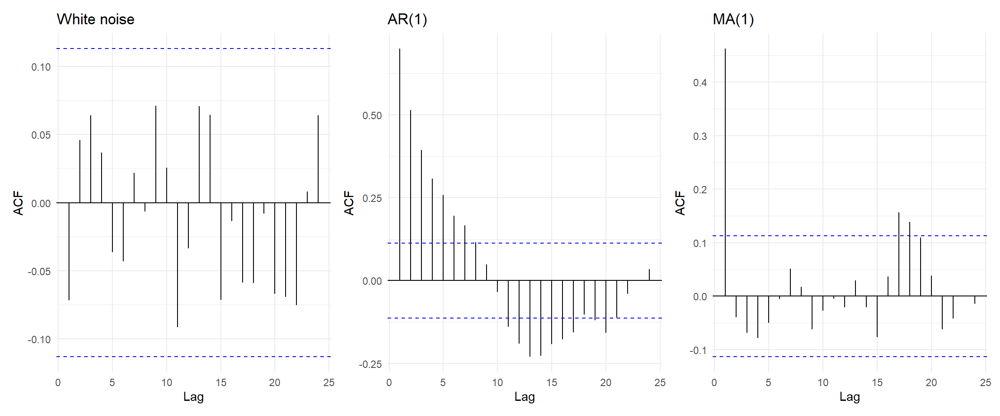
Figure 7 compares the ACFs of the three processe. White noise has no significant autocorrelations, the AR(1) ACF decays geometrically and the MA(1) ACF has no significant spikes after lag 1.
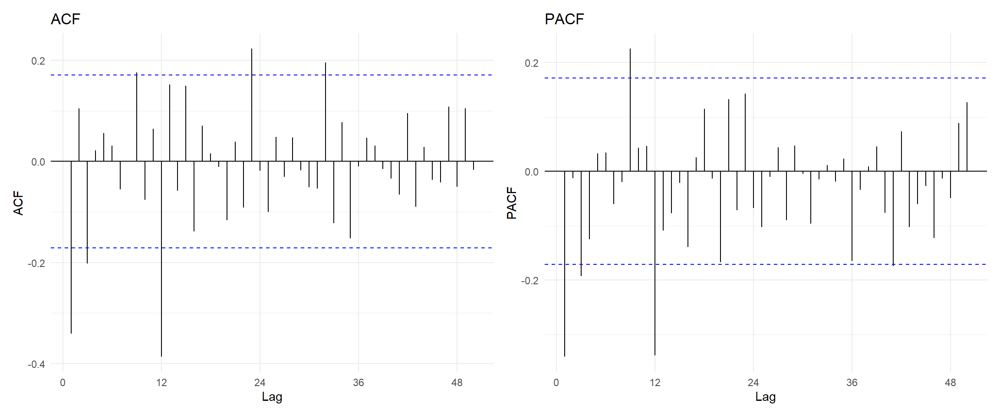
If you are observing spikes outside of the first few this indicates seasonality in the series. Figure 8 suggests that there is still seasonality present in the transformed and differenced AirPassengers dataset, however this could also just be because differencing reduced the number of observations resulting in a more noisy dataset.
The ARMA(\(p,q\) ) model
The ARMA model allows for process that show persistence and short lived shocks simultaneously. The series must be stationary.
\[ y_t = c + \sum^p_{i=1} \phi_i y_{t-i} + \varepsilon_t + \sum^q_{j=1} \theta_j \varepsilon_{t-j}, \quad \varepsilon_t \sim WN(0,\sigma^2). \]
this is equivalent to: \(\phi (L)y_t = c + \theta (L) \varepsilon_t.\)
Note
ARMA models are fitted by maximum likelihood due to the moving average part (not OLS).
The ARIMA(\(p,d,q\) ) model
The ARIMA model applies \(d\) differences to \(y_t\) and then fits an ARMA(\(p,q\)) to the result.
\[ \phi(L)(1-L)^dy_t = c+ \theta(L)\varepsilon_t \]
| Specification | Equivalent to |
|---|---|
| ARIMA(1,0,0) | AR(1) |
| ARIMA(0,0,1) | MA(1) |
| ARIMA(1,0,1) | ARMA(1,1) |
| ARIMA(0,1,0) | Random walk |
| ARIMA(0,1,0) with c ≠ 0 | Random walk with drift |
| ARIMA(1,1,1) | One difference, then ARMA(1,1) |
Although Table 1 illustrates the special cases of ARIMA, sometimes there is a constant included that must be taken into account.
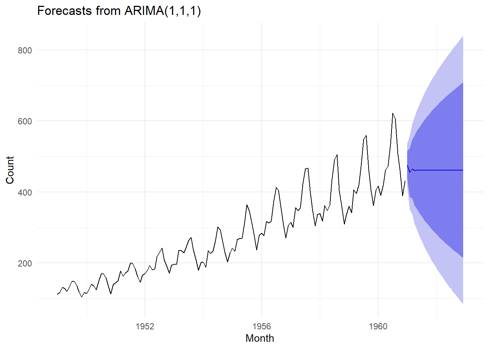
AirPassengers series with forecasts and prediction intervals for 24 months.
Ljung-Box test
data: Residuals from ARIMA(1,1,1)
Q* = 231.49, df = 22, p-value < 2.2e-16
Model df: 2. Total lags used: 24NULL
The forecasts in Figure 9 do not repeat the seasonal pattern. After a few months they flatten out and the intervals become very wide. In Figure 10 we can see that the residuals do not look like white noise. This is due to the ARIMA(1,1,1) model not accounting for the seasonality present in the data.
The SARIMA(\(p,d,q\) )(\(P,D,Q\) )\(_m\) model
\[ \Phi(L^m)\phi(L)(1-L^m)^D(1-L)^dy_t = \Theta(L^m)\theta(L)\varepsilon_t. \]
When we check an ACF plot of the AirPassengers series, we can see clear seasonality.
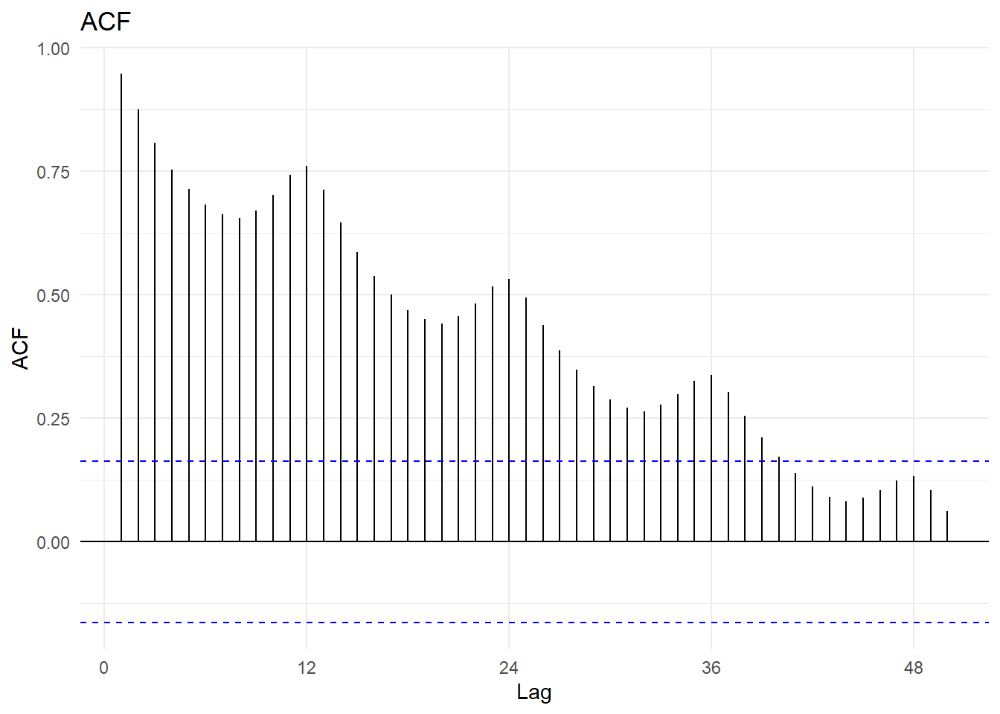
Figure 11 and Figure 10 suggest that we need to model the AirPassengers series with a seasonality component as well.
Code
# Which SARIMA model is the best fit:
best_fit = auto.arima(AirPassengers,
lambda=0,
stepwise=FALSE,
approximation=FALSE)
summary(best_fit)Series: AirPassengers
ARIMA(0,1,1)(0,1,1)[12]
Box Cox transformation: lambda= 0
Coefficients:
ma1 sma1
-0.4018 -0.5569
s.e. 0.0896 0.0731
sigma^2 = 0.001371: log likelihood = 244.7
AIC=-483.4 AICc=-483.21 BIC=-474.77
Training set error measures:
ME RMSE MAE MPE MAPE MASE
Training set 0.05140418 10.15504 7.357553 -0.004079016 2.623636 0.229706
ACF1
Training set -0.03689673
Figure 12 carries the seasonal shape forward while the intervals widen. The model is fitted on the log scale, so the back-transformed intervals are asymmetric and the seasonal swings grow with the level. This is the behaviour a seasonal model is fitted for.
Time Series Analysis Exercises
Question 4
Code
# Read in data:
knives = ts(c(19,15,39,102,90,29,90,46,30,66,80,89,82,17,26,29),
start = c(1991,1),
frequency = 12)a
A \(k\)-month moving average forecasts the next month using the average of the last \(k\) months:
\[ \hat{y}_{T+1 \mid T} = \frac{1}{k}\sum_{j=0}^{k-1} y_{T-j}. \]
Code
k_val = c(3,5,7,9,11)
# Forecast:
ma_fc = numeric(length(k_val))
# For loop to calculate forecasts:
for (i in seq_along(k_val)){
ma_fc[i] = mean(tail(knives, k_val[i]))
}
knitr::kable(
data.frame(k = k_val,
`Forecast for May 1992` = ma_fc,
check.names = FALSE),
digits = 2)| k | Forecast for May 1992 |
|---|---|
| 3 | 24.00 |
| 5 | 48.60 |
| 7 | 55.57 |
| 9 | 51.67 |
| 11 | 53.09 |
The forecasts range from 24 (3-month MA) to about 56 (7-month MA). The 3-month MA only uses February to April 1992, which were all very low months, so it gives a much lower forecast than the longer averages.
b) Which \(k\) minimises the errors?
To choose \(k\), each moving average is used to make one-step-ahead forecasts within the data (as if we were standing at each month and forecasting the next). The errors are compared over the same months (December 1991 to April 1992), since the 11-month MA can only start forecasting in December 1991. Comparing over the same period is fairer than letting each \(k\) use all the months it can.
Code
# Load data:
y = as.numeric(knives)
n = length(y) # no. observations
# Initialise error matrix:
names = paste0('MA(',k_val,')')
err = matrix(NA,
nrow=n,
ncol=length(k_val),
dimnames=list(NULL,names))
for (j in seq_along(k_val)) {
k = k_val[j]
for (t in (k+1):n) {
# One-step-ahead MA forecast:
fc = mean(y[(t-k):(t-1)])
# Store forecast error:
err[t,j] = y[t]-fc
}
}
# Common forecast origins (December 1991 to April 1992):
common = 12:16
# Calculate error metrics:
ma_acc = data.frame(
k = k_val,
MSE = colMeans(err[common,]^2)
)
kable(ma_acc,digits=1,row.names=FALSE)| k | MSE |
|---|---|
| 3 | 1376.6 |
| 5 | 1279.6 |
| 7 | 1130.8 |
| 9 | 1048.8 |
| 11 | 1313.8 |
The MSE of each moving average is calculated over the same 5 forecast origins (December 1991 to April 1992), so that each value of \(k\) is compared on the same months. MA(9) has the lowest MSE (1048.8), followed by MA(7) (1130.8). Thus, assuming the past pattern continues, management should select \(k = 9\) to minimise the forecast errors. However, the MSE is only calculated over 5 forecasts, so the difference between \(k = 7\) and \(k = 9\) is not very reliable.
Question 5
Code
# Read in data:
souvenir = ts(c(
1664.81, 2397.53, 2840.71, 3547.29, 3752.96, 3714.74, 4349.61, 3566.34, 5021.82, 6423.48, 7600.6, 19756.21,
2499.81, 5198.24, 7225.14, 4806.03, 5900.88, 4951.34, 6179.12, 4752.15, 5496.43, 5835.1, 12600.08, 28541.72,
4717.02, 5702.63, 9957.58, 5304.78, 6492.43, 6630.8, 7349.62, 8176.62, 8573.17, 9690.5, 15151.84, 34061.01,
5921.1, 5814.58, 12421.25, 6369.77, 7609.12, 7224.75, 8121.22, 7979.25, 8093.06, 8476.7, 17914.66, 30114.41,
4826.64, 6470.23, 9638.77, 8821.17, 8722.37, 10209.48, 11276.55, 12552.22, 11637.39, 13606.89, 21822.11, 45060.69,
7615.03, 9849.69, 14558.4, 11587.33, 9332.56, 13082.09, 16732.78, 19888.61, 23933.38, 25391.35, 36024.8, 80721.71,
10243.24, 11266.88, 21826.84, 17357.33, 15997.79, 18601.53, 26155.15, 28586.52, 30505.41, 30821.33, 46634.38, 104660.67),
start = c(1987, 1),
frequency = 12)a)
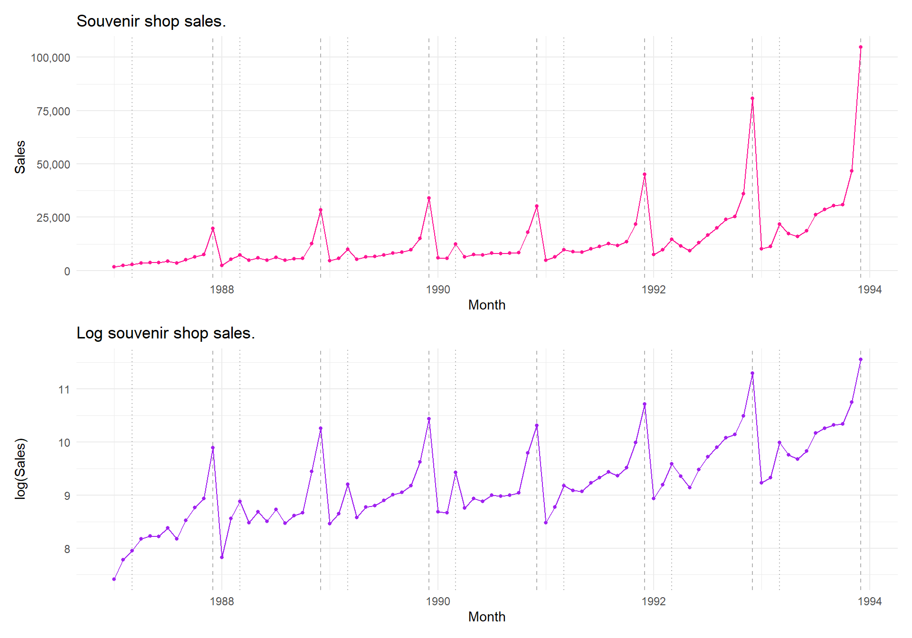
Figure 13 shows a clear upward trend in sales from 1987 to 1993. This can be explained by the shop expanding its premises, products and staff. There is strong seasonality, with a large peak every December due to the Christmas influx of tourists. A smaller peak occurs every March from 1988 onwards, due to the surfing festival. The size of the seasonal fluctuations increases as the level of sales increases. This suggests a multiplicative pattern. Sale levels dropped slightly in December 1990 and in 1991 before rapidly increasing in 1992 and 1993. The log(sales) are plotted for question (b).
b)
The variance of the series increases with the as sales increase over time. Thus, the variance is not constant and grows with the level of sales. Taking logarithms stabilises the variance and converts the multiplicative pattern into an additive one (Figure 13). The log series can be modelled with a linear model, which assumes constant variance.
c)
Code
# Total sales per year and logs:
annual_tot = aggregate(souvenir, FUN = sum)
annual_df = data.frame(
year = as.numeric(time(annual_tot)),
total = as.numeric(annual_tot),
log_total = log(as.numeric(annual_tot))
)
kable(annual_df, digits = 4, col.names = c("Year", "Total sales", "log(Total sales)"))| Year | Total sales | log(Total sales) |
|---|---|---|
| 1987 | 64636.10 | 11.0765 |
| 1988 | 93986.04 | 11.4509 |
| 1989 | 121808.00 | 11.7102 |
| 1990 | 126059.87 | 11.7445 |
| 1991 | 164644.51 | 12.0115 |
| 1992 | 268717.73 | 12.5014 |
| 1993 | 362657.07 | 12.8012 |
Code
# Fit linear regression:
fit_log = lm(log_total ~ year, data = annual_df)
summary(fit_log)
Call:
lm(formula = log_total ~ year, data = annual_df)
Residuals:
1 2 3 4 5 6 7
-0.01119 0.09260 0.08131 -0.15496 -0.15852 0.06077 0.08998
Coefficients:
Estimate Std. Error t value Pr(>|t|)
(Intercept) -526.56801 46.43933 -11.34 9.33e-05 ***
year 0.27059 0.02334 11.60 8.37e-05 ***
---
Signif. codes: 0 '***' 0.001 '**' 0.01 '*' 0.05 '.' 0.1 ' ' 1
Residual standard error: 0.1235 on 5 degrees of freedom
Multiple R-squared: 0.9641, Adjusted R-squared: 0.957
F-statistic: 134.4 on 1 and 5 DF, p-value: 8.374e-05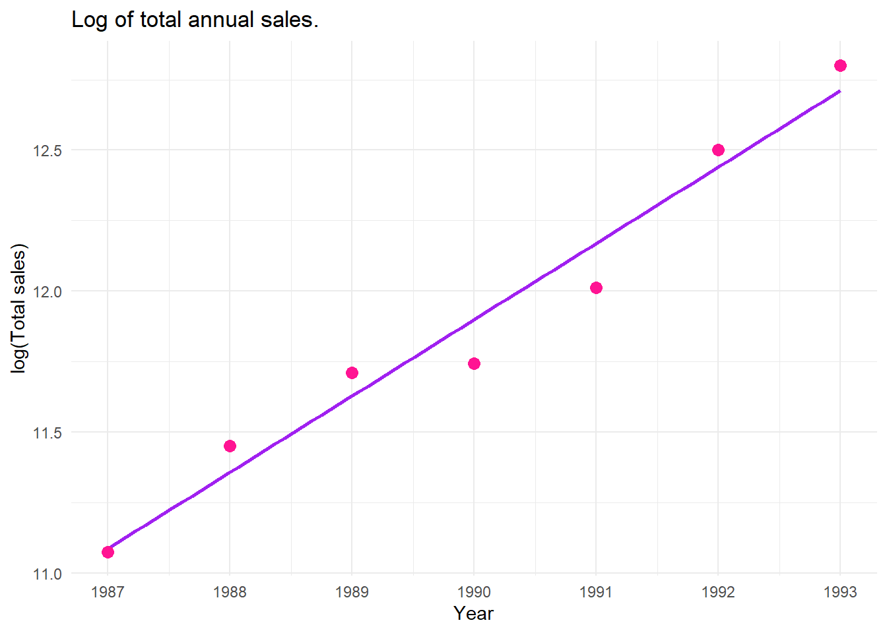
The fitted model is \(\widehat{\log(\text{Sales})} = -526.57 + 0.2706 \times \text{Year}\). Year is statistically significant (\(p < 0.001\)) and the model explains 96.4% of the variation in log total sales (\(R^2 = 0.964\)). The gradient of the fitted line means that the total annual sales grow by approximately \(e^{0.2706} - 1 = 31\%\) per year. Figure 14 shows that 1990 and 1991 lie below the fitted line. This is consistent with the levelling off in sales seen in Figure 13.
d)
Code
new_years = data.frame(year = 1994:1996)
pred_log = predict(fit_log,
newdata = new_years,
interval = "prediction",
level = 0.95)
kable(
data.frame(Year = 1994:1996, pred_log),
digits = 4,
col.names = c("Year", "Predicted log(total)", "Lower 95%", "Upper 95%"))| Year | Predicted log(total) | Lower 95% | Upper 95% |
|---|---|---|---|
| 1994 | 12.9818 | 12.5662 | 13.3974 |
| 1995 | 13.2524 | 12.7995 | 13.7053 |
| 1996 | 13.5230 | 13.0283 | 14.0177 |
Table 2 displays the predicted log total annual sales, which increase by 0.2706 each year. The 95% prediction intervals widen as the forecast horizon increase, since the uncertainty in the estimated trend grows as we move further from the observed data. The intervals assume the linear trend continues and that the residuals are normally distributed with constant variance. This assumption is difficult to check with only 7 observations.
e)
Code
pred_raw = exp(pred_log)
kable(data.frame(Year = as.character(1994:1996), pred_raw),
digits = 0,
col.names = c("Year", "Predicted total sales", "Lower 95%", "Upper 95%"))| Year | Predicted total sales | Lower 95% | Upper 95% |
|---|---|---|---|
| 1994 | 434443 | 286706 | 658309 |
| 1995 | 569439 | 362039 | 895651 |
| 1996 | 746383 | 455122 | 1224040 |
The predictions and intervals in Table 3 are obtained by taking the exponential of the log predictions and intervals in Table 2. Total sales are predicted to grow from \(434\,443\) in 1994 to \(746\,383\) in 1996. The intervals are not symmetric around the predictions, since the exponential transformation stretches the upper bound more than the lower bound. The back-transformed prediction of the total sales is the median as opposed to the mean. Thus, it slightly underestimates the expected sales.
Question 7
Code
# Read in data:
strikes = ts(c(4737, 5117, 5091, 3468, 4320, 3825, 3673, 3694, 3708, 3333,
3367, 3614, 3362, 3655, 3963, 4405, 4595, 5045, 5700, 5716,
5138, 5010, 5353, 6074, 5031, 5648, 5506, 4230, 4827, 3885),
start = 1951)a)

Figure 15 shows that the number of strikes wanders without a fixed mean. The series decreases until 1961 then increases until about 1974 and then decreases again. The ACF of the strikes decays slowly (0.73 at lag 1, 0.66 at lag 2, 0.56 at lag 3). This is indicative of a non-stationary series. Thus, first differencing is needed (\(d = 1\)). The first differences fluctuate around zero with no apparent trend. Thus, the differenced series appears stationary. The ACF of the differenced series has one negative spike at lag 1 (\(-0.34\), close to the significance bound) and cuts off after lag 1, while the PACF tapers off. This pattern is indicative of an MA(1). Thus, an ARIMA(0,1,1) model seems appropriate.
b)
\[ (1-L)y_t = (1+\theta_1 L)\varepsilon_t. \]
This expands to \(y_t = y_{t-1} + \varepsilon_t + \theta_1\varepsilon_{t-1}\).
c)
Code
fit_strikes = Arima(strikes, order = c(0, 1, 1))
summary(fit_strikes)Series: strikes
ARIMA(0,1,1)
Coefficients:
ma1
-0.3094
s.e. 0.1515
sigma^2 = 330817: log likelihood = -224.98
AIC=453.95 AICc=454.41 BIC=456.69
Training set error measures:
ME RMSE MAE MPE MAPE MASE ACF1
Training set -28.86394 555.6637 419.4877 -1.66885 9.60312 0.9207647 -0.06000998
Ljung-Box test
data: Residuals from ARIMA(0,1,1)
Q* = 2.4792, df = 5, p-value = 0.7796
Model df: 1. Total lags used: 6
The fitted model is \((1-B)Y_t = (1 - 0.3094B)e_t\), with \(\hat\theta_1 = -0.3094\) (s.e. = 0.1515) and \(\hat\sigma^2 = 330{,}817\). In Figure 16 the residuals fluctuate around zero with no pattern and none of the autocorrelations are significant. The Ljung–Box test fails to reject the null hypothesis (\(p = 0.780\)). Thus, the residuals appear like white noise and the ARIMA(0,1,1) model is satisfactory.
d)
From the model, \(Y_{T+1} = Y_T + e_{T+1} + \theta_1 e_T\). Future errors have expected value zero, and \(e_T\) is estimated by the last residual, so
\[ \hat{Y}_{T+1 \mid T} = Y_T + \hat{\theta}_1 \hat{e}_T, \qquad \hat{Y}_{T+1 \mid T} = \hat{Y}_{T+2 \mid T} = \hat{Y}_{T+3 \mid T}, \]
since for \(h \geq 2\) both \(e_{T+h}\) and \(e_{T+h-1}\) are future errors. The forecasts are therefore flat. The forecast variance is \(\sigma^2[1 + (h-1)(1+\theta_1)^2]\), which grows linearly with \(h\).
Code
# Extract model values:
theta = coef(fit_strikes)['ma1']
y_T = tail(strikes,1) # strikes in 1980
e_T = tail(residuals(fit_strikes),1)
# Forecast by hand:
fc_hand = rep(as.numeric(y_T+theta*e_T),3)
# Forecast with R:
fc_strikes = forecast(fit_strikes,h=3)
# Compare:
fc_df = data.frame(
Year = 1981:1983,
`By hand` = fc_hand,
R = as.numeric(fc_strikes$mean),
check.names = FALSE
)
kable(fc_df,digits=1)| Year | By hand | R |
|---|---|---|
| 1981 | 4157.3 | 4157.3 |
| 1982 | 4157.3 | 4157.3 |
| 1983 | 4157.3 | 4157.3 |
e)
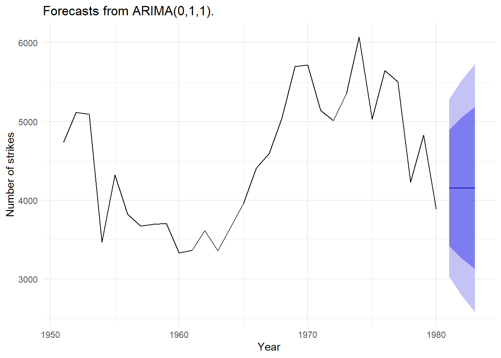
In Figure 17 the forecasts for 1981 to 1983 are constant, since the ARIMA(0,1,1) model has no drift. The forecast is slightly above the 1980 value (3,885), since the MA term corrects for the large negative residual in 1980. The 80% and 95% prediction intervals widen as the forecast horizon increases (and uncertainty increases).
Conditional Variance Models
All of the above models model the conditional mean and assume a constant variance. For many series, especially financial returns, the variance is not constant. Large changes tend to follow large changes and small changes tend to follow small changes (volatility clustering). Thus, a conditional variance model have a mean equation and a variance equation:
\[ y_t = \mu_t + a_t, \qquad a_t = \sigma_t\varepsilon_t, \qquad \varepsilon_t \overset{iid}{\sim} D(0,1), \]
\[ \text{ARCH}(q): \ \sigma_t^2 = \alpha_0 + \sum_{i=1}^{q}\alpha_i a_{t-i}^2, \qquad \text{GARCH}(p,q): \ \sigma_t^2 = \alpha_0 + \sum_{i=1}^{q}\alpha_i a_{t-i}^2 + \sum_{j=1}^{p}\beta_j \sigma_{t-j}^2, \]
with \(\alpha_0 > 0\) and \(\alpha_i, \beta_j \geq 0\) so that the variance is always positive. In a GARCH(1,1), \(\alpha_1 + \beta_1\) is the persistence. If \(\alpha_1 + \beta_1 < 1\), the volatility reverts to the long-run variance \(\alpha_0/(1 - \alpha_1 - \beta_1)\). I applied these models to JSE returns in Project 3.
Code
# Tbrate columns: r = 91-day T-bill rate, y = log real GDP, pi = inflation rate
# Extract T-bill rate and first differences:
Tbill = Tbrate[,1]
Del.Tbill = diff(Tbill)Problem 1
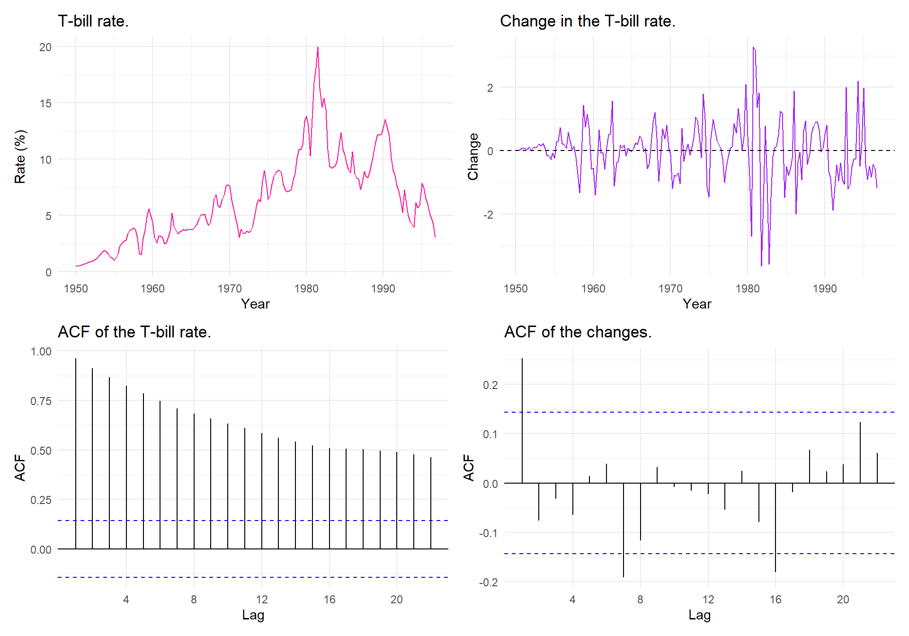
Code
# Unit root tests (ADF H0: unit root, KPSS H0: stationary):
adf_tbill = adf.test(Tbill)
adf_del = adf.test(Del.Tbill)
kpss_tbill = kpss.test(Tbill)
kpss_del = kpss.test(Del.Tbill)
unit_tbl = data.frame(
Series = c("Tbill", "Del.Tbill"),
`ADF statistic` = c(adf_tbill$statistic, adf_del$statistic),
`ADF p-value` = c(adf_tbill$p.value, adf_del$p.value),
`KPSS statistic` = c(kpss_tbill$statistic, kpss_del$statistic),
`KPSS p-value` = c(kpss_tbill$p.value, kpss_del$p.value),
check.names = FALSE
)
kable(unit_tbl, digits = 3)| Series | ADF statistic | ADF p-value | KPSS statistic | KPSS p-value |
|---|---|---|---|---|
| Tbill | -1.925 | 0.608 | 2.259 | 0.01 |
| Del.Tbill | -5.298 | 0.010 | 0.158 | 0.10 |
In Figure 18 the T-bill rate wanders with no fixed mean and its ACF decays slowly. This suggests that the series is non-stationary. The changes in the T-bill rate fluctuate around zero and its ACF dies out quickly but the size of the changes is not constant. There are periods of large changes and periods of small changes, which is indicative of volatility clustering. The variance of the changes also depends on the level of the rate, since the changes are largest when the T-bill rate is high (around 1980) and smaller when the rate is low. Table 4 displays the results from the ADF and KPSS tests. For the T-bill rate, the ADF test does not reject a unit root (\(p = 0.608\)) and the KPSS test rejects stationarity (\(p < 0.01\)), so the series is non-stationary. For the changes in T-bill rate, the ADF test rejects a unit root (\(p < 0.01\)) and the KPSS test does not reject stationarity (\(p > 0.10\)), so the changes are stationary. Thus, the first differences are modelled.
Problem 2
Since Tbill is not stationary, the model is fitted to Del.Tbill.
Code
garch.model.Tbill = garchFit(formula = ~arma(1,0) + garch(1,0),
data = Del.Tbill,
trace = FALSE)
summary(garch.model.Tbill)
Title:
GARCH Modelling
Call:
garchFit(formula = ~arma(1, 0) + garch(1, 0), data = Del.Tbill,
trace = FALSE)
Mean and Variance Equation:
data ~ arma(1, 0) + garch(1, 0)
<environment: 0x000001ac12aa2d98>
[data = Del.Tbill]
Conditional Distribution:
norm
Coefficient(s):
mu ar1 omega alpha1
0.083497 0.241635 0.338157 0.834828
Std. Errors:
based on Hessian
Error Analysis:
Estimate Std. Error t value Pr(>|t|)
mu 0.08350 0.05391 1.549 0.121395
ar1 0.24163 0.07280 3.319 0.000902 ***
omega 0.33816 0.06145 5.503 3.73e-08 ***
alpha1 0.83483 0.24295 3.436 0.000590 ***
---
Signif. codes: 0 '***' 0.001 '**' 0.01 '*' 0.05 '.' 0.1 ' ' 1
Log Likelihood:
-223.7818 normalized: -1.196694
Description:
Fri Oct 30 09:57:15 2026 by user: isabe
Standardised Residuals Tests:
Statistic p-Value
Jarque-Bera Test R Chi^2 26.966162 1.394352e-06
Shapiro-Wilk Test R W 0.957289 1.957134e-05
Ljung-Box Test R Q(10) 10.827502 3.711143e-01
Ljung-Box Test R Q(15) 13.108154 5.939444e-01
Ljung-Box Test R Q(20) 16.111444 7.096868e-01
Ljung-Box Test R^2 Q(10) 12.183130 2.729873e-01
Ljung-Box Test R^2 Q(15) 14.317430 5.016035e-01
Ljung-Box Test R^2 Q(20) 17.287544 6.342310e-01
LM Arch Test R TR^2 9.685432 6.435358e-01
Information Criterion Statistics:
AIC BIC SIC HQIC
2.436169 2.505284 2.435279 2.464174 Code
garch.model.Tbill@fit$matcoef Estimate Std. Error t value Pr(>|t|)
mu 0.08349652 0.05390549 1.548943 1.213955e-01
ar1 0.24163450 0.07279700 3.319292 9.024598e-04
omega 0.33815662 0.06144724 5.503203 3.729535e-08
alpha1 0.83482811 0.24295106 3.436199 5.899382e-04An AR(1)/ARCH(1) model is fitted to the changes in the T-bill rate (\(y_t\) = Del.Tbill):
\[ y_t = \mu + \text{ar1}\,y_{t-1} + a_t, \qquad a_t = \sigma_t\varepsilon_t, \qquad \varepsilon_t \overset{iid}{\sim} N(0,1), \]
\[ \sigma_t^2 = \omega + \alpha_1 a_{t-1}^2. \]
Code
coef_tbl = garch.model.Tbill@fit$matcoef
rownames(coef_tbl) = c("$\\mu$", "AR(1)", "$\\omega$", "$\\alpha_1$")
kable(coef_tbl, digits = 4)| Estimate | Std. Error | t value | Pr(>|t|) | |
|---|---|---|---|---|
| \(\mu\) | 0.0835 | 0.0539 | 1.5489 | 0.1214 |
| AR(1) | 0.2416 | 0.0728 | 3.3193 | 0.0009 |
| \(\omega\) | 0.3382 | 0.0614 | 5.5032 | 0.0000 |
| \(\alpha_1\) | 0.8348 | 0.2430 | 3.4362 | 0.0006 |
Table 5 shows the parameter estimates of the AR(1)/ARCH(1) model:
\[ y_t = 0.0835 + 0.2416\,y_{t-1} + a_t, \qquad \sigma_t^2 = 0.3382 + 0.8348\,a_{t-1}^2. \]
The intercept \(\mu\) is not significant (\(p = 0.121\)), so we fail to reject the hypothesis that the average change in the T-bell rate is zero. Since the mean equation includes an AR term, \(\mu\) is the intercept not the mean. The implied unconditional mean is \(0.0835/(1-0.2416) \approx 11\) percentage points per quarter. This is a slight upward drift, small relative to the series’ volatility. The AR(1) coefficient in significant (\(p < 0.001\)), so consecutive quarterly changes have some positive dependence. \(\omega\) and \(\alpha_1\) are both significant (\(p < 0.001\)). \(\alpha_1 = 0.835\) is large, so a large shock in one quarter strongly increases the variance in the next quarter. This confirms the volatility clustering seen in Figure 18.
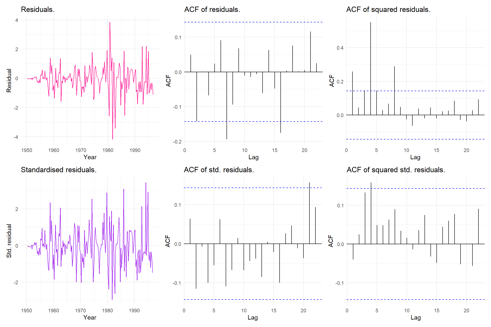
Problem 3
a
The “ACF of residuals” panel in Figure 19 plots the autocorrelations of the raw residuals \(\hat a_t = y_t - \hat\mu_t\) from the mean equation. Almost all autocorrelations lie within the significance bounds, with only small spikes at lags 7 and 16. Thus, the AR(1) term captures most of the dependence in the mean.
b
The “ACF of squared residuals” panel plots the autocorrelations of the squared raw residuals, which measure dependence in the variance. There are large significant spikes at lags 1, 4 and 8. Thus, the squared residuals are autocorrelated. This suggests that a constant variance model is not suitable, since there are ARCH effects present in the series.
c
The “ACF of squared std. residuals” panel plots the autocorrelations of \((\hat a_t/\hat\sigma_t)^2\). These should be uncorrelated if the variance equation is sufficient. Almost all autocorrelations lie within the bounds, with only lag 4 on the boundary. Thus, the ARCH(1) term captures most of the volatility clustering present in the series. This agrees with the Ljung–Box tests on \(R^2\) (\(p > 0.27\)). The spike at lag 4 suggests there may be some yearly pattern in the volatility that the ARCH(1) term does not capture.
d
garch.model.Tbill@sigma.t contains the fitted conditional standard deviations \(\hat\sigma_t\) from the variance equation, one for each quarter. Dividing the residuals by \(\hat\sigma_t\) gives the standardised residuals.
e
The “Standardised residuals” panel shows the standardised residuals are more evenly spread than the raw residuals, since the large changes around 1980 have been scaled down. However, the variance is still not constant. The standardised residuals are small in the 1950s and larger after about 1970, which suggests the variance also depends on the level of the T-bill rate and this is not captured by the ARCH(1) model. Thus, a heavier-tailed distribution (the \(t\) distribution) may be more appropriate.
Problem 4
Code
del.log.tbill = diff(log(Tbill))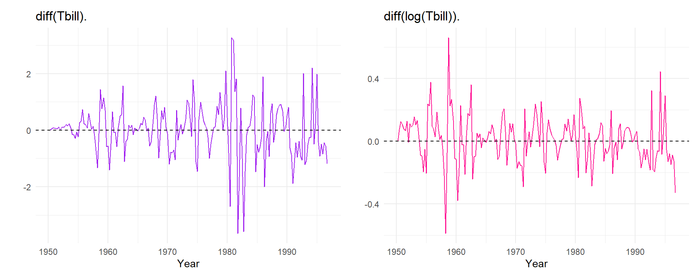
Code
# Fit candidate ARMA/GARCH models to log changes:
fit_arch_n = garchFit(~arma(1,0) + garch(1,0), data = del.log.tbill, trace = FALSE)
fit_garch_n = garchFit(~arma(1,0) + garch(1,1), data = del.log.tbill, trace = FALSE)
fit_garch_t = garchFit(~arma(1,0) + garch(1,1), data = del.log.tbill,
cond.dist = "std", trace = FALSE)
log_fits = list("AR(1)/ARCH(1), normal" = fit_arch_n,
"AR(1)/GARCH(1,1), normal" = fit_garch_n,
"AR(1)/GARCH(1,1), t" = fit_garch_t)
# Information criteria (fGarch divides by sample size):
ic_log = t(sapply(log_fits, function(f) f@fit$ics[c("AIC", "BIC")]))
kable(ic_log, digits = 4)| AIC | BIC | |
|---|---|---|
| AR(1)/ARCH(1), normal | -1.0769 | -1.0078 |
| AR(1)/GARCH(1,1), normal | -1.1661 | -1.0797 |
| AR(1)/GARCH(1,1), t | -1.2081 | -1.1044 |
Code
best_log_name = rownames(ic_log)[which.min(ic_log[, "BIC"])]
best_log = log_fits[[best_log_name]]Code
coef_log = best_log@fit$matcoef
rownames(coef_log) = c("$\\mu$", "AR(1)", "$\\omega$", "$\\alpha_1$", "$\\beta_1$", "$\\nu$")
kable(coef_log, digits = 4)| Estimate | Std. Error | t value | Pr(>|t|) | |
|---|---|---|---|---|
| \(\mu\) | 0.0104 | 0.0086 | 1.2091 | 0.2266 |
| AR(1) | 0.4357 | 0.0783 | 5.5638 | 0.0000 |
| \(\omega\) | 0.0044 | 0.0034 | 1.3041 | 0.1922 |
| \(\alpha_1\) | 0.4324 | 0.2674 | 1.6173 | 0.1058 |
| \(\beta_1\) | 0.5405 | 0.1770 | 3.0536 | 0.0023 |
| \(\nu\) | 3.2132 | 1.1566 | 2.7781 | 0.0055 |
BIC selects the AR(1)/GARCH(1,1) model with \(t\)-distributed errors (Table 6). In Table 7, AR(1) and \(\beta_1\) are significant, and the persistence \(\alpha_1 + \beta_1 = 0.973\) is close to 1, so volatility shocks die out slowly. The shape parameter \(\nu = 3.21\) is small, so the errors have heavier tails than a normal distribution.
The log difference is approximately the percentage change in the rate. Thus, the size of the changes no longer depends on the level of the rate (Figure 20) and forecasts of the T-bill rate stay positive.

In Figure 21 the standardised residuals have a roughly constant spread across the whole period, unlike the model for Del.Tbill. None of the autocorrelations of the standardised residuals or of their squares lie outside the significance bounds. Thus, the AR(1)/GARCH(1,1) model with \(t\)-distributed errors captures the dependence in both the mean and the variance. The log difference is approximately the percentage change in the rate, so the size of the changes no longer depends on the level of the T-bill rate. The standardised residuals in Figure 21 have no remaining level-dependent variance.
Spectral Analysis
This is my work-through of Spectral Analysis in R. The tutorial’s helper functions are used throughout. The questions are answered in my own words, and I used Claude (Anthropic) to add the code for the figures that were not shown in the tutorial.
Setup and toolkit
Code
library(tidyverse)
library(patchwork)
col_obs = "deeppink" # observed series
col_ref = "purple" # true/reference line
col_bar = "grey50" # periodogram ordinates
# Note: element k + 1 of fft(y) is frequency k/n
# Function to calculate raw periodogram at Fourier frequencies j/n:
pgram = function(y, demean = TRUE) {
n = length(y)
if (demean) y = y - mean(y)
I = Mod(fft(y))^2 / n
j = 1:floor(n / 2)
tibble(freq = j / n, period = n / j, I = I[j + 1])
}
# Function to calculate theoretical ARMA spectral density (unit innovation variance):
arma_spec = function(f, ar = numeric(0), ma = numeric(0), sigma2 = 1) {
vapply(f, function(ff) {
num = if (length(ma))
Mod(1 + sum(ma * exp(-2i * pi * ff * seq_along(ma))))^2 else 1
den = if (length(ar))
Mod(1 - sum(ar * exp(-2i * pi * ff * seq_along(ar))))^2 else 1
sigma2 * num / den
}, numeric(1))
}
# g = max ordinate / sum of ordinates
# P(G > g) = sum_{k=1}^{floor(1/g)} (-1)^{k-1} choose(q, k) (1 - k g)^{q-1}
# Function for Fisher's g test (H0: white noise):
fisher_g_test = function(y) {
y = y - mean(y)
n = length(y)
I = Mod(fft(y))^2 / n
m = floor((n - 1) / 2) # ordinates exponential under H0
I = I[2:(m + 1)]
q = length(I)
g = max(I) / sum(I)
K = floor(1 / g)
k = 1:K
terms = (-1)^(k - 1) * exp(lchoose(q, k) + (q - 1) * log1p(-k * g))
p = min(max(sum(terms), 0), 1)
jmax = which.max(I)
list(g = g, p.value = p, freq = jmax / n, period = n / jmax)
}The question spectral analysis asks
The time domain asks how the past influences the present. The frequency domain asks which oscillations are present in the series and how much of the variance each of them explains. Both describe the same process but some features are much easier to see in the frequency domain.
Q: A monthly series has a strong annual pattern. What period and frequency represent this cycle?
A: The period is \(s = 12\) months, so the frequency is \(\omega = \frac{1}{12} \approx 0.083\) cycles per month.
Period, frequency and the ts() collision
A sinusoid with period \(m\) has frequency \(f = \frac{1}{m}\) cycles per observation and angular frequency \(\omega = 2\pi f = 2\pi/m\) radians per observation.
frequency in ts() is a period
In ts(y, frequency = 12) the frequency argument is the number of observations per cycle, which is the period \(m\), not the frequency \(f\). Passing frequency = \frac{1}{12} would tell R that the series is annual.
Code
monthly = ts(rnorm(60), frequency = 12)
quarterly = ts(rnorm(40), frequency = 4)
frequency(monthly) # 12 = period m[1] 12Code
frequency(quarterly) # 4[1] 4
Q: Complete the table
A:
| Data | Cycle | Period \(m\) | Frequency \(f = 1/m\) |
|---|---|---|---|
| Monthly | Annual | 12 | 0.0833 |
| Quarterly | Annual | 4 | 0.2500 |
| Hourly | Daily | 24 | 0.0417 |
| Daily | Weekly | 7 | 0.1429 |
The Nyquist frequency and aliasing
You need at least two observations per cycle (one near the peak and one near the trough). Thus, the fastest oscillation a sampled series can show has a period of 2 observations. This is the Nyquist frequency, \(f_N = \frac{1}{2}\) cycle per observation. Faster oscillations do not disappear. They are folded back into \([0, \frac{1}{2}]\) and appear at a lower frequency, which is known as aliasing.

A period of 1.5 is a frequency of \(\frac{2}{3}\), which is above the Nyquist frequency. It is folded to \(|\frac{2}{3} - 1| = \frac{1}{3}\), the frequency of the period-3 wave, which is why the two waves agree at every sampled point in Figure 22.
Q: A process oscillates at a true frequency of \(\frac{2}{3}\) cycles per observation. Can a series sampled once per observation resolve it, and can any later analysis recover it?
A: No. The true frequency is above the Nyquist frequency \(f_N = \frac{1}{2}\), so there are fewer than two observations per cycle. At the observed times, the true oscillation gives exactly the same values as a slower oscillation at the alias frequency \(|f - k|\). Since the sampled values are identical, no later analysis can recover the true frequency. The periodogram will show a peak at the alias instead. The only fix is to sample more often.
A series as a sum of waves
A sinusoid with amplitude \(A\), frequency \(f\) and phase \(\varphi\) can be written as
\[ A\cos(2\pi f t + \varphi) = a\cos(2\pi f t) + b\sin(2\pi f t), \qquad A = \sqrt{a^2 + b^2}. \]
The right-hand side is linear in \(a\) and \(b\), so for a known frequency it is just a regression with two columns. At the Fourier frequencies \(f_j = \frac{j}{n}\) the sine and cosine columns are orthogonal. Thus, the total sum of squares splits exactly across the frequencies, and the periodogram is an analysis of variance by frequency. The regression is fitted below at the frequency of a known cycle and compared with the periodogram ordinate.
The periodogram
The periodogram \(I(f)\) measures how much of the variation in a series comes from an oscillation at frequency \(f\). Its population version is the spectral density \(S(f)\), which spreads the variance of a stationary process over the frequencies. For example, a tall ordinate at \(f = \frac{1}{12}\) in monthly data means that a 12-month cycle explains a large share of the variance.
In R, spec.pgram() is used to estimate the periodogram. By default it removes a linear trend, tapers the ends of the series, pads the series and rescales by frequency(x). Thus, its values only match pgram() when these options are switched off.
Q: Monthly data show a large ordinate at \(f = 0.0833\). What do you report?
A: The period, with units: \(\frac{1}{0.0833} \approx 12\), which is an annual cycle.
Worked example: a known cycle

Figure 23 shows an obvious oscillation, but it is not easy to read off its exact length.
Q: Which frequency should dominate the periodogram?
A: \(f = \frac{1}{24}\), a 24-month period.
Code
pg_cyc = pgram(y_cyc)
pg_cyc |>
slice_max(I, n = 5) |>
mutate(period = 1 / freq) |>
kable(digits = 4)| freq | period | I |
|---|---|---|
| 0.0417 | 24.0000 | 234.5078 |
| 0.5000 | 2.0000 | 0.6709 |
| 0.1208 | 8.2759 | 0.6153 |
| 0.4042 | 2.4742 | 0.5132 |
| 0.3958 | 2.5263 | 0.4966 |
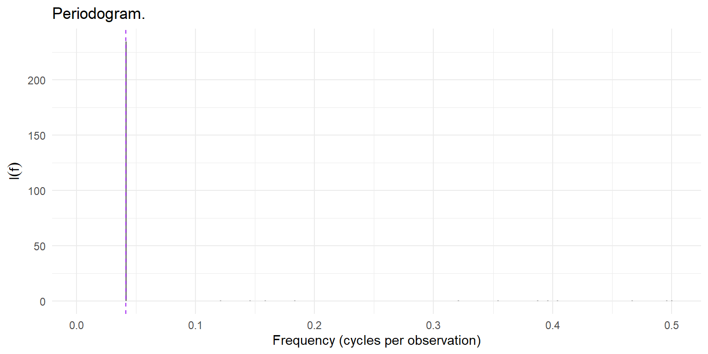
Q: What is the dominant frequency and period, and does it match the construction?
A: The largest ordinate is at \(f = 10/240 = 0.0417\), a period of 24 observations. This is exactly how the series was built. Since \(240/24 = 10\), the cycle lies exactly on a Fourier frequency, so all its power is in one ordinate. The other ordinates are tiny in comparison (Figure 24). The time plot showed an oscillation, but the periodogram tells us its length immediately.
The same analysis with spec.pgram()
Code
sp_cyc = spec.pgram(y_cyc, taper = 0, detrend = FALSE, fast = FALSE, plot = FALSE)
jmax = which.max(sp_cyc$spec)
c(peak_frequency = sp_cyc$freq[jmax],
peak_period = 1 / sp_cyc$freq[jmax])peak_frequency peak_period
0.04166667 24.00000000 With its defaults switched off, spec.pgram() finds the same peak. From here on I use spec.pgram(), because detrending, tapering and smoothing are exactly the steps a real analysis needs.
Reading a periodogram: five steps
Step 1: convert the peak to a period
Find the largest ordinate, invert its frequency and attach the units of the data.
Step 2: check for harmonics
A seasonal pattern that is not a pure sinusoid needs harmonics at \(2/m, 3/m, \dots\) to build its shape. The sharper the pattern, the more harmonics it needs.
Q: A monthly series has large peaks at 1/12, 2/12 and 3/12. Are these three cycles of 12, 6 and 4 months?
A: No, they are the fundamental (12 months) and the harmonics of one annual pattern that is not shaped like a sine wave. I would report a single twelve-month cycle and note that the 6- and 4-month peaks are its harmonics.
Step 3: do not trust a single tall ordinate
The raw periodogram is unbiased but not consistent. This means that each ordinate estimates \(S(f)\) correctly on average but its standard deviation is roughly as large as its mean and does not shrink as \(n\) grows.
Q: A raw periodogram has one very tall peak. Does that prove a real cycle?
A: No. There are many ordinates and each one is very noisy, so some will always look large by chance. To separate real cycles from noise you need to smooth the spectrum and test the largest peak.
Step 4: smooth, and keep what survives
Neighbouring ordinates estimate almost the same value of a smooth spectrum. Thus, averaging them reduces the noise. In spec.pgram() the spans argument sets how many neighbours are averaged.
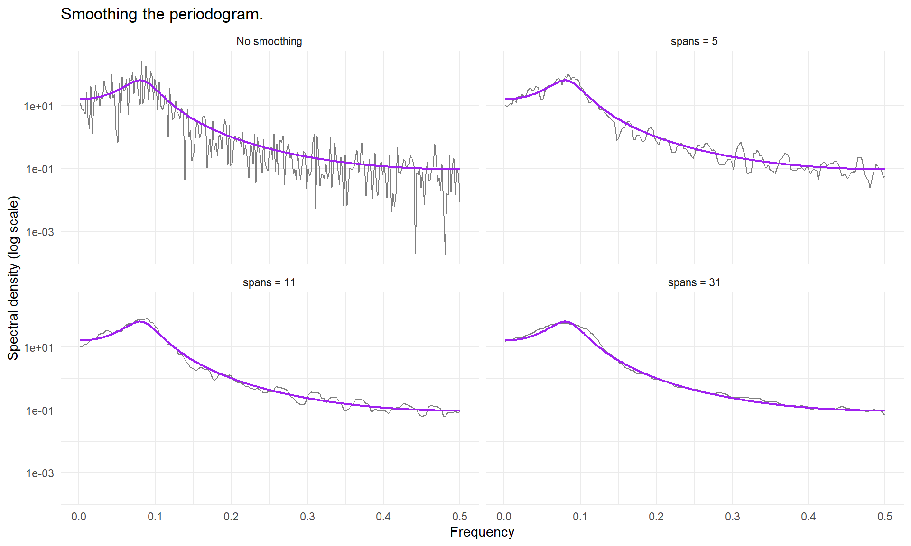
Q: What goes wrong if the smoothing span is (1) too small, or (2) too large?
A: If the span is too small the spectrum will remain noisy but if it is too large true peaks are averaged out.
Step 5: test the largest peak
Fisher’s test compares the largest ordinate with the sum of all of them, \(g = \max_j I(f_j)/\sum_j I(f_j)\) and its null distribution accounts for having picked the maximum.
Code
set.seed(2026)
fisher_g_test(rnorm(240)) $g
[1] 0.04863759
$p.value
[1] 0.2936269
$freq
[1] 0.2166667
$period
[1] 4.615385Code
fisher_g_test(y_cyc) $g
[1] 0.9370008
$p.value
[1] 2.495038e-140
$freq
[1] 0.04166667
$period
[1] 24
Q: What is the null hypothesis, and what does rejecting it mean?
A: Null hypothesis is that the series is white noise. Rejecting the null hypothesis is because there is insignificant evidence that the series is white noise.
Preparing a series
The three routine steps are all spec.pgram() defaults. Remove the mean (and usually the trend), taper the ends and cosmetically pad the series.
Spectral signatures of familiar models
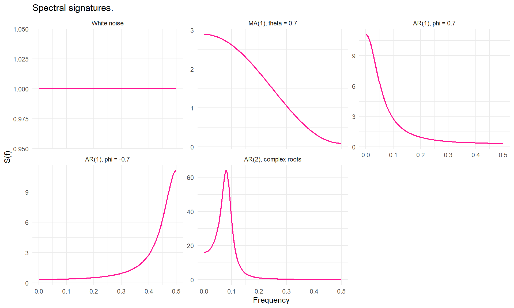
| Process | Shape of \(S(f)\) |
|---|---|
| White noise | Flat at every frequency |
| MA(1) | Monotone, sloping up or down |
| AR(1), \(\phi > 0\) | Power concentrated at low frequencies (“red”) |
| AR(1), \(\phi < 0\) | Power concentrated at high frequencies (“blue”) |
| AR(2), complex roots | A peak at an interior frequency |
| Seasonal | A narrow spike at \(1/m\) and its harmonics |
A cycle that is not seasonal
The AR(2) \(y_t = 1.5y_{t-1} - 0.75y_{t-2} + \varepsilon_t\) has complex roots and a spectral peak at about \(f \approx 0.08\), a period of about 12.4 observations:
Code
f_peak = f_grid[which.max(arma_spec(f_grid, ar = c(1.5, -0.75)))]
c(peak_frequency = f_peak, peak_period = 1 / f_peak)peak_frequency peak_period
0.08 12.50
Q: Would a periodogram peak near twelve months prove deterministic annual seasonality?
A: No. An AR(2) with complex roots can also give a peak near 12 months, but its cycles vary in length and are not tied to the calendar. The difference is the width of the peak. A stochastic cycle gives a broad peak, whereas deterministic seasonality gives a narrow spike at \(1/m\) and its harmonics.
What differencing does to a spectrum
Filtering a series multiplies its spectrum by a fixed curve. For the first difference \((1-L)\) the curve is \(|1 - e^{-2\pi i f}|^2 = 4\sin^2(\pi f)\), and for the seasonal difference \((1 - L^{12})\) it is \(4\sin^2(12\pi f)\).

The first difference multiplies the power at \(f = 0\) by zero (it removes the level and strongly damps a trend) but it multiplies the power at \(f = 1/2\) by four. The seasonal difference has zeros at \(f = 0, 1/12, 2/12, \dots, 6/12\), so it removes the level and every seasonal harmonic (Figure 27).
Q: Why is unnecessary differencing harmful rather than merely unhelpful?
A: Differencing removes low-frequency variation and amplifies high-frequency variation. If there is no trend, it removes a component that was not there and amplifies the fastest, least informative variation. Differencing white noise doubles the variance and creates a lag 1 autocorrelation of \(-0.5\), which is not invertible.
The frequency domain versus the ACF
| Task | Time domain | Frequency domain | Better suited |
|---|---|---|---|
| Detect dependence | Significant spikes in the ACF/PACF | The spectrum is not flat | Either |
| Find the length of a cycle | Read the lag of repeating ACF peaks (imprecise) | Period = 1 / frequency of the spectral peak | Frequency |
| Judge how regular a cycle is | Difficult: look at how slowly the ACF oscillation dies out | Narrow peak = regular cycle; broad peak = irregular cycle | Frequency |
| Separate several cycles | Very difficult: the cycles overlap in the ACF | Each cycle appears as its own peak | Frequency |
| Choose a model | Match ACF/PACF patterns to AR, MA or ARMA | Indirectly: the shape of the spectrum hints at AR or MA behaviour | Time |
| Forecast future values | Directly, from the fitted model | Not directly: found cycles can feed into a harmonic regression | Time |
| Handle non-stationarity | Difference or transform first, then model | Must be made stationary first, or the spectrum is misleading | Time |
The time and frequency domains contain the same information, since the spectral density is the Fourier transform of the autocovariance function. However, Table 10 shows that each domain makes different questions easy to answer. The frequency domain describes the series but does not forecast it, which is why ARIMA models are used for forecasting.
Q: A series appears to contain cycles of roughly 7, 30 and 365 observations. Which representation makes these simultaneous periodicities easier to see?
A: The frequency domain. The three cycles appear as three separate peaks at \(1/7\), \(1/30\) and \(1/365\). The overlapping patterns in an ACF would be difficult to distinguish.
Exercise
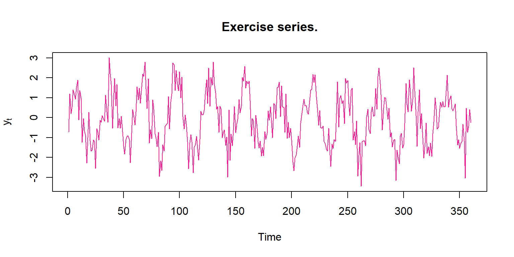
Task 1: predict, then read the periodogram.
Code
pg = pgram(y)
pg |> slice_max(I, n = 5)# A tibble: 5 × 3
freq period I
<dbl> <dbl> <dbl>
1 0.0333 30 203.
2 0.261 3.83 3.32
3 0.1 10 2.92
4 0.231 4.34 2.53
5 0.272 3.67 2.23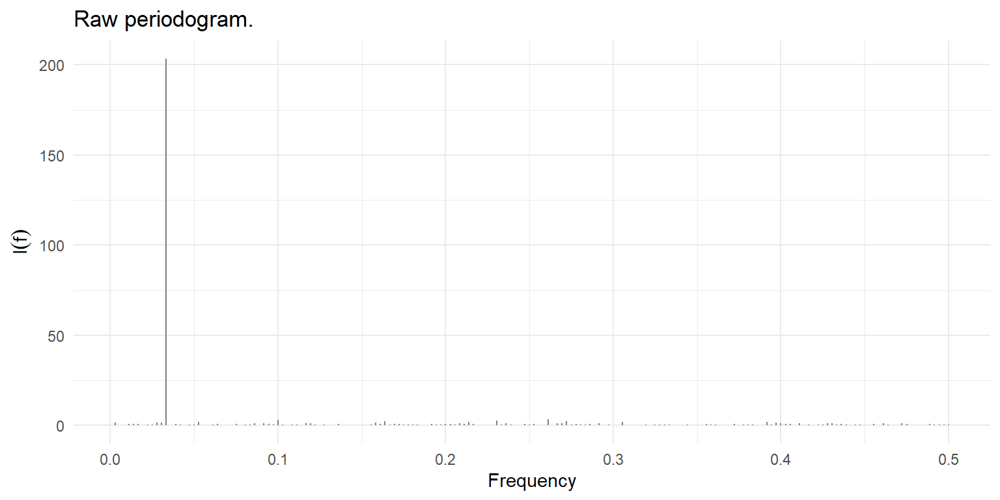
The largest ordinate is at \(f = 12/360 = 0.0333\), a period of 30 observations (Figure 29). Since \(360/30 = 12\), the cycle again lies exactly on a Fourier frequency. The next largest ordinates are about 60 times smaller. In the time plot (Figure 28) a cycle is visible but its exact length is not.
Task 2: smooth at two spans.
Code
sp9 = spec.pgram(y, spans = 9, taper = 0.1, detrend = TRUE, fast = FALSE, plot = FALSE)
sp15 = spec.pgram(y, spans = 15, taper = 0.1, detrend = TRUE, fast = FALSE, plot = FALSE)
par(mfrow = c(2, 1))
plot(sp9$freq, sp9$spec, type = "l", log = "y", col = col_obs,
main = "Smoothed (spans = 9)", xlab = "Frequency", ylab = "Spectral density")
abline(v = 1 / 30, lty = 2, col = col_ref)
plot(sp15$freq, sp15$spec, type = "l", log = "y", col = col_obs,
main = "More smoothing (spans = 15)", xlab = "Frequency", ylab = "Spectral density")
abline(v = 1 / 30, lty = 2, col = col_ref)
par(mfrow = c(1, 1))
In Figure 30 the peak near \(1/30\) is still there after heavier smoothing. It becomes wider and slightly lower, but it is still well above the rest of the spectrum, which is roughly flat. This is why two spans are compared: a real cycle remains when the smoothing is increased, whereas a peak caused by noise tends to disappear.
Task 3: formal test.
Code
fisher_g_test(y)$g
[1] 0.6690766
$p.value
[1] 5.812113e-84
$freq
[1] 0.03333333
$period
[1] 30Fisher’s test rejects white noise (\(g = 0.669\), \(p < 0.001\)), and the largest ordinate is at a period of 30. Thus, the largest ordinate is too large to be a chance maximum under white noise. The smoothed spectrum adds information about where the cycle is and how broad it is.
Final interpretation.
The spectrum has one dominant peak at a frequency of about 0.033 cycles per observation, which is a cycle of about 30 observations. The peak remains after smoothing, so it is not just a single noisy ordinate, and Fisher’s test gives strong evidence against white noise (\(p < 0.001\)). The rest of the spectrum is roughly flat, so the noise around the cycle looks like white noise. Thus, the series does not need to be prewhitened before testing.